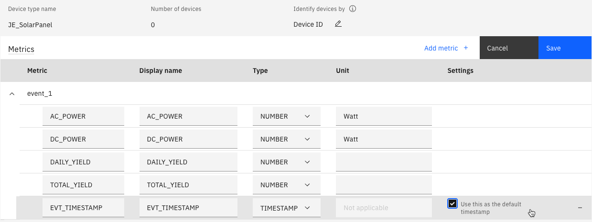

Objectives
In this Exercise you will learn how to setup Monitor to receive data from a CSV file that contains solar panel data.
- Create a device type and setup metrics in Monitor
- Create a device in Monitor to send events to
Create a device type and setup metrics in Monitor
Create a device type
- Go to Setup in Monitor
- Go to Devices tab
- Click on + button to create a device type
- Choose Basic template
- Next
- Enter a Device type name, e.g. XX_SolarPanel (replace XX with your initials).
Take note of the name you give as you will need this in the Node-RED flow config - Create
Create Metrics in the device type
- Under Metrics section click Add metric
- Click Add metric
a. Enter AC_POWER for Metric
b. Enter AC_POWER for Display name
c. Enter event_1 for Event
d. Choose NUMBER for Type
e. Enter Watt for Unit - Click Add metric
a. Enter DC_POWER for Metric
b. Enter DC_POWER for Display name
c. Choose event_1 for Event
d. Choose NUMBER for Type
e. Enter Watt for Unit - Click Add metric
a. Enter DAILY_YIELD for Metric
b. Enter DAILY_YIELD for Display name
c. Choose event_1 for Event
d. Choose NUMBER for Type - Click Add metric
a. Enter TOTAL_YIELD for Metric
b. Enter TOTAL_YIELD for Display name
c. Choose event_1 for Event
d. Choose NUMBER for Type - Click Add metric
a. Enter EVT_TIMESTAMP for Metric
b. Enter EVT_TIMESTAMP for Display name
c. Choose event_1 for Event
d. Choose TIMESTAMP for Type - Click Add
- Apply checkmark in the box to
Use this as the default timestamp - The metrics should look like this:
 - Click Save
Create a device in Monitor representing the device in the CSV file
- Click the blue Setup link in the top left which will take you to the device types list
- The device type you created should be selected
- Click on
Add device + - Enter 1BY6WEcLGh8j5v7 for name
- Choose Custom token
- Enter Pasword1!
- Click Add and Close
Import Node-RED flow to import the CSV
- Download the flow
- Launch Node-RED
- Click on the burger menu and choose Import
- Click on select a file to import
- Choose the file downloaded in step 1.
- Click Import
Configure Node-RED flow for your MAS Monitor environment
Collect the following:
* name of the device type created above, e.g. XX_SolarPanel
* Messaging hostname which should look like this
[tenant/workspace].messaging.iot.[domain]
e.g. masdev.messaging.iot.monitordemo2.ibmmam.com
- Double click on the purple
mqtt outnode namedSend MQTT event to a device in MAS Monitor - Click on the pencil icon next to Server
- In the Server box replace with your Messaging hostname
- Click on the pencil icon next to TLS configuration
- In the Server Name box replace with your Messaging hostname
- Uncheck
Verify server certificateand click Update - The Client ID for a device looks like this:
d:<tenant>:<device type>:<device ID> - In the Client ID field replace masdev with your tenant/workspace name if it is not the same
- In the Client ID field replace XX_SolarPanel with your device type
- Click on the Security tab, write
use-token-authas the username
and writePasword1!as the Password - Click Update
- Click Done
- Click Deploy in the top right corner
- You should now see a green dot and
connectedbelow themqtt outnode
if all credentials were entered correctly:
Run the Node-RED flow for a single device
- Download single_solar_panel.csv from github
- Click on the down arrow in the upper right corner in Node-RED and choose Dashboard

- Click on the launch arrow

- Click on Choose File or Browse under "Upload CSV with a single device"
- Select the
single_solar_panel.csvfile and click the right arrow play button - Go back to the Node-RED flow window
- Under the light purple
delaynode it shows the amount of messages left to send to Monitor - Under the green
debugProgress node it shows the amount of messages that have been sent to Monitor - Wait till the number under the light purple
delaynode shows 0.
Progress node should say 1659.
- All the data has been ingested into Monitor
Verify the data is in Monitor
- Go to Setup in Monitor
- Click on the Device Type created earlier in the lab
- Click on the black button "Set up device type"
- On the left side open Metric and then select AC_POWER
- Click on Data table to see the values of that metric
Congratulations! You have ingested data from a CSV file into Monitor.
Now you can explore creating calculated data metrics and dashboards in Monitor.
Which could be something like this:
Attention
Please archive and delete your device type when it is no longer being used.